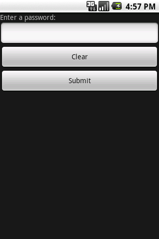
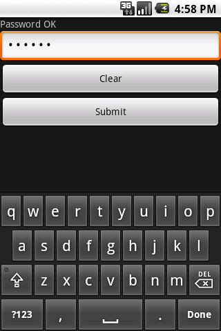

HelloNativeUI is a well-commented example application for beginners. It consists of a very simple graphical user interface application that uses the NativeUI library and Moblet framework. It illustrates how to create NativeUI screens, and how to position widgets and handle events.
|  |  |
These screens show the look of the application on Android: its appearance is, of course, different on different platforms because it uses each platform's native GUI controls and settings. Note also that this example will not work on the MoSync emulator (MoRE) because it has no Native UI support yet.
This example is included in the MoSync SDK installation in the /examples folder. For information on importing the examples into your workspace, see Importing the Examples.
When the application runs, the user is presented with a simple NativeUI screen with four widgets:
On clicking the Submit button, the password is validated (just validates the length of the password for demonstration purposes).
Examine the source code of the application to learn how the program works. The code commenting highlights various aspects of working with NativeUI screens and widgets, including:
To understand how NativeUI and MAUI (an alternative GUI solution that use's MoSync's own screens and widgets to ensure graphical consistency across all platforms), compare this example application with the HelloMAUI example application.
You can take a look at the source code for this example at GitHub: https://github.com/MoSync/MoSync/tree/ThreeZero/examples/cpp/HelloNativeUI